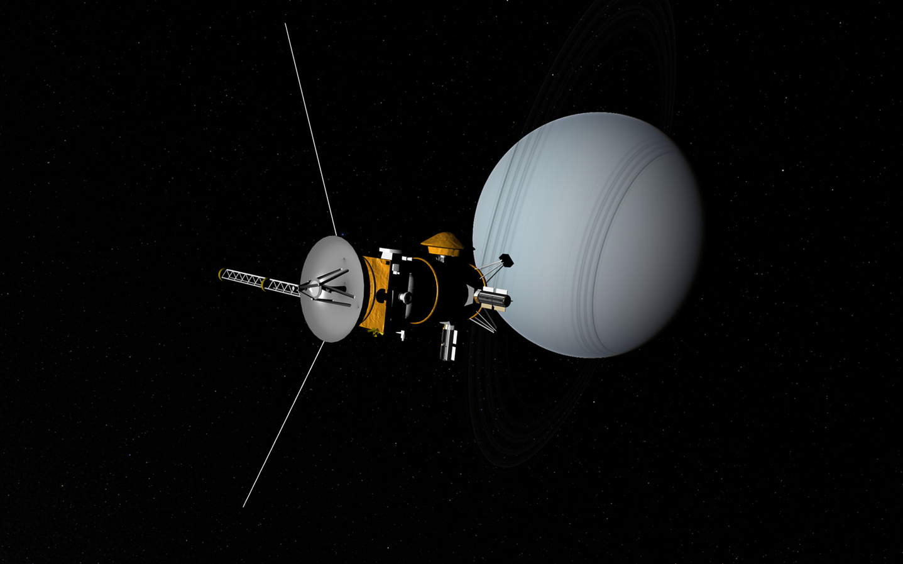

Mission concept
Uranus Orbiter and Probe
Uranus & its moons
The mission that started this project: an interplanetary journey followed by an extended Uranian-system tour. The addon includes an atmospheric probe and a scenario with 72 moon encounters.
Inspired by the Uranus Orbiter and Probe decadal-survey study.
Addon & image credits
MartianBuilder